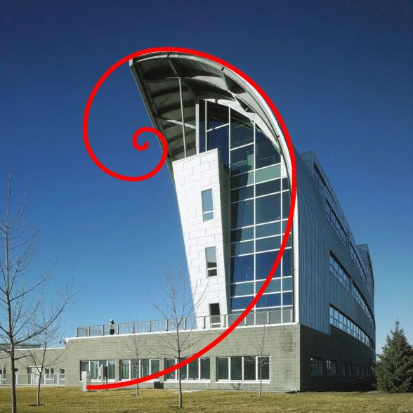

Modern Creations
It Brings Balance and Height
As a general rule, we gravitate toward buildings that appear balanced. Though “modern” marvels of construction may be fun to look at, we tend to write them off for day-to-day use because they the space is perceived as less functional than their more conventionally structured counterparts. One of the simplest ways to impart a sense of balance to a structure is to base it off the principles of the golden rectangle.
To explain it simply, a golden rectangle signifies any shape that can be wholly divided into up into a square and a rectangle that, when combined, establish a ratio of 1:1.61.
Architecture is a blend of art and engineering; mastery of the golden ratio in modern architecture is a lifelong endeavor.
We strive to create structures that are aesthetically pleasing, functional, and enduring. Aesthetics, or how we humans perceive an object, is, perhaps, the most ephemeral aspect of architecture. Perception is highly dependent on our frame of reference and what we regard as familiar.
we perceive as beautiful is to a great extent based on proportions—how various parts of a whole relate to one another.
We find that many of our clients, whether they have a background in design or not, have an inherent sense of proportion when it comes to the size and shape of a room or other components of a home. It’s as if that sense of proportion is built into our brains from birth.
The History of Perfect Proportions .Our distant ancestors in Egypt, Greece, and Rome recognized and recorded their observations on how beauty could be quantified in terms of the proportions of a given body or object. In fact, they came up with a mathematical interpretation of the ideal proportional building block. Although it originated in the early works of civilization, it is still applied in mathematics, art, music, and a host of other artistic, engineering, and scientific pursuits.
The Greeks referred to it as Phi. While the more widely known “pi” is the ratio of the circumference of a circle to its diameter, “phi” is the ratio of line segments that occur when a line is divided in a specific way. Unlike “pi”, which is a transcendental number, “phi” is the solution to a quadratic equation. It creates an ideal rectangle.

The Development stage
During the 20th century, a significant number of modern architects tended to break away from the ideal proportions of classical architecture. The results were often not well received.
Today, many architects seem to be returning to the “Golden Ratio” as an important tool in crafting the appearance of structures ranging from massive institutional and commercial buildings to single-family homes. Phil Kean, whom is a modern residential architect, agrees with this approach.
“At Phil Kean Design Group, we have a deep respect for these ancient theories and generally adhere to the ideal strictures of proportion when creating modern house plans. Proportions may vary somewhat, but we try to remain conscious of that Golden Ratio. If we deviate from it, we make sure that the deviation will enhance rather than detract from the overall aesthetics and functionality of the structure,” says Kean.